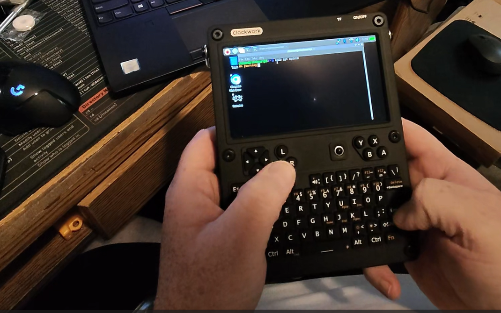
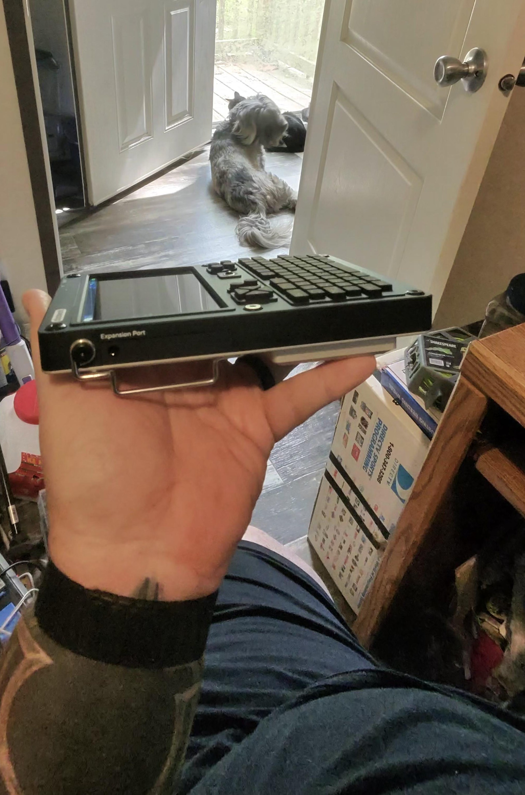
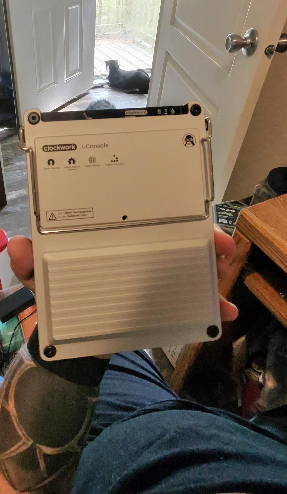
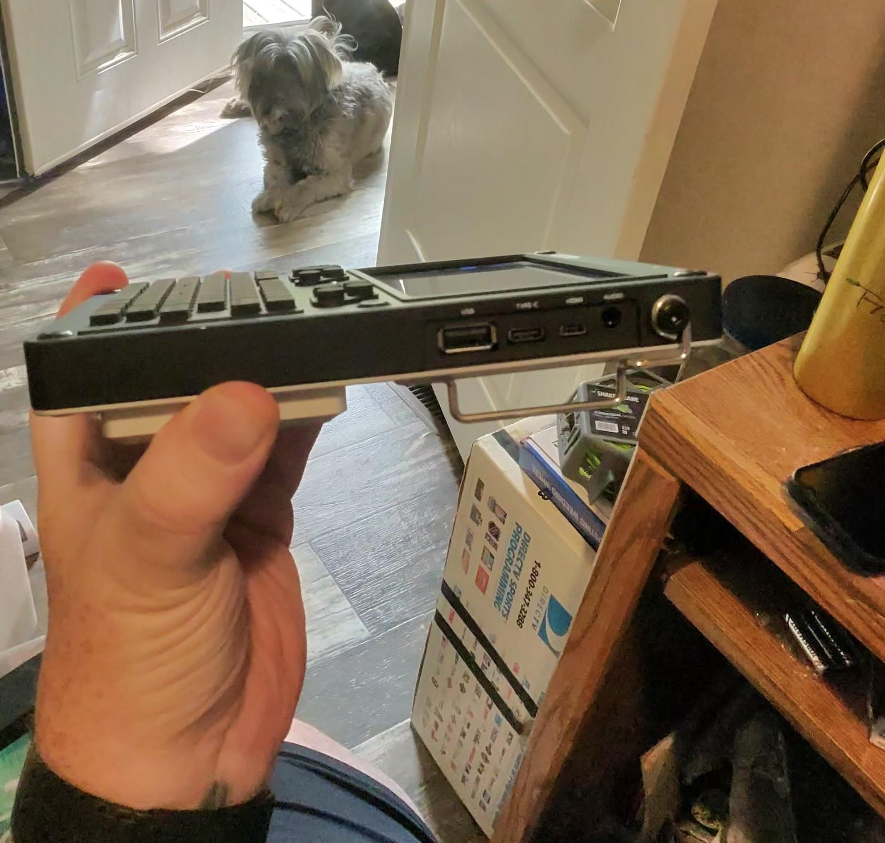
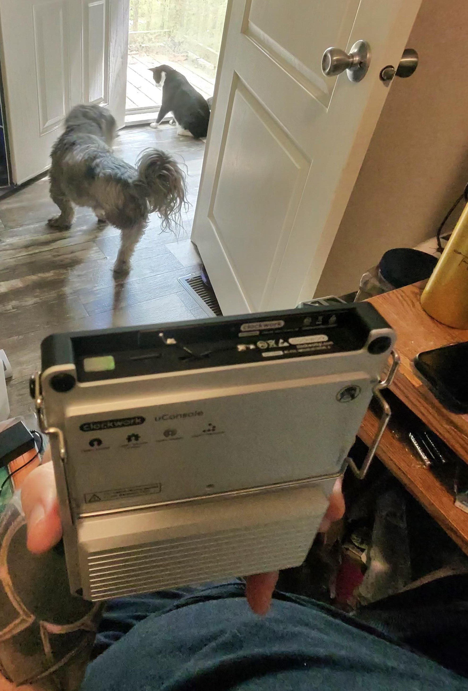
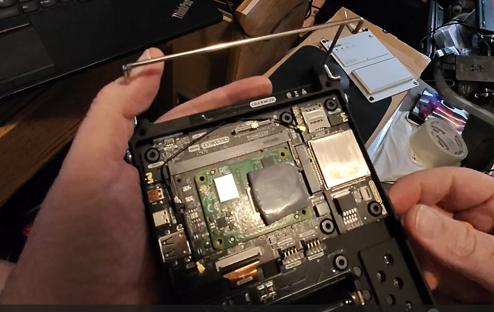
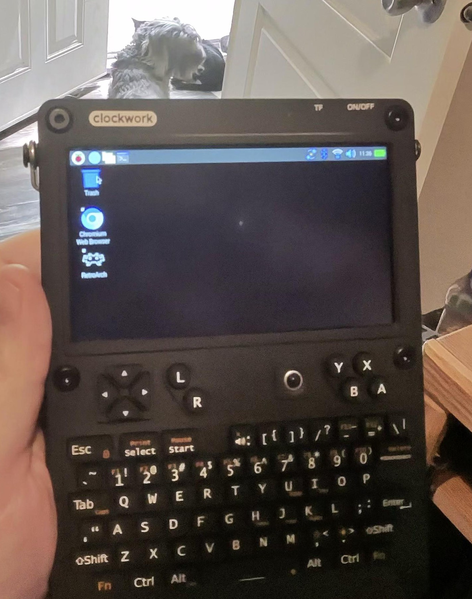
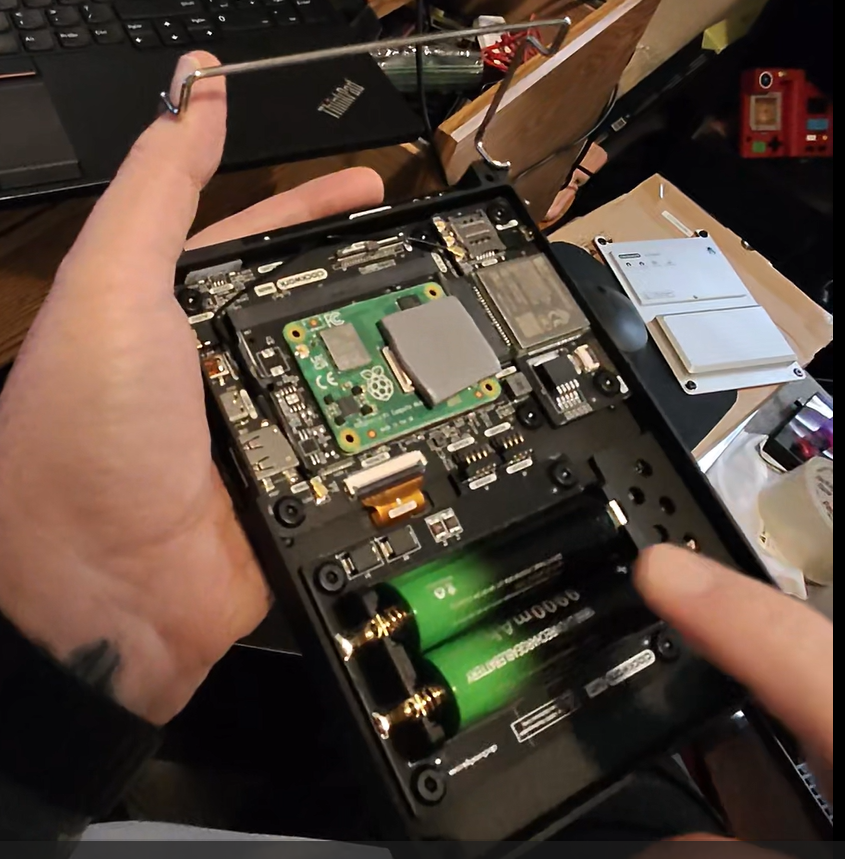

🖥️ Clockwork uConsole Review (LTE, 4GB RAM)
by Joshua “RedBeard” Smith – RedBeard Technologies LLC
This is my first official hardware review, the start of a series covering handheld PCs, edge AI devices, and rugged DIY kits. The Clockwork uConsole isn’t just another handheld — it’s a build-it-yourself machine that teaches you the guts of the hardware while rewarding you with a tough, portable Linux terminal.
Specs — Model Reviewed
- RAM: 4 GB
- Storage: microSD (no onboard eMMC in this unit)
- Connectivity: 4G LTE variant (SIM slot present; not yet fully tested)
- Battery: 2× 18650 cells (user-supplied, not included)
- CPU: ARM Cortex-A72 cores
Battery life depends heavily on the quality of the 18650s you install. Good cells = good runtime, cheap ones drain fast.
Build & Design
The uConsole’s metal case gives it a rugged, almost industrial feel. It’s dense and tough — this isn’t a plastic toy. The keyboard is compact but usable; I was surprised how comfortable it felt even for longer typing sessions.



Setup & Internals
Assembly is straightforward but rewarding. You follow the steps, bolt it together, and by the end you understand how the device is laid out. That makes upgrades and repairs far less intimidating.
Taking off the back cover reveals the dual 18650 battery bay and connectors for the WiFi and LTE antennas. This transparency is part of the appeal — the hardware isn’t sealed away, it’s yours to tinker with.



Daily Use
Keyboard: responsive, well-spaced for its size, and practical for terminal work.
Trackball: the weak point. It functions, but it’s frustrating for precision and long sessions. I’d love to see an alternate pointing option in future revisions.

Power & Batteries
The uConsole uses two 18650 cells. Access requires removing the back panel with bolts — not hot-swap friendly in the field, but at least user-replaceable.

Pros / Cons
Pros
- Rugged metal chassis with premium feel
- DIY build process is fun and educational
- Keyboard is better than most handheld layouts
- LTE hardware gives future-ready connectivity
- Transparent internals encourage tinkering
Cons
- Trackball is the biggest frustration
- Batteries not included — you must source your own 18650s
- Not hot-swappable; panel removal required
- Limited performance by ARM SoC (great for terminal tasks, not AAA gaming)
Verdict — 7.5/10
The uConsole isn’t perfect, but it’s a rugged, DIY-friendly handheld that I genuinely enjoyed building and using. The trackball holds it back, but the overall design feels tough, flexible, and repairable.
More than anything, this device fits my ethos: learn by building. It taught me more about handheld design than any sealed-box product could.
This is only the start. Expect future reviews of Orange Pi, Jetson, and other edge AI hardware as I expand my coverage.
Joshua “RedBeard” Smith
📧 redbeard@redbeardtek.com · 🌐 redbeardtek.com · 🎥 YouTube · 🐦 X/Twitter